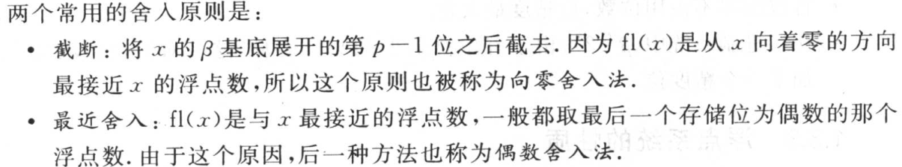
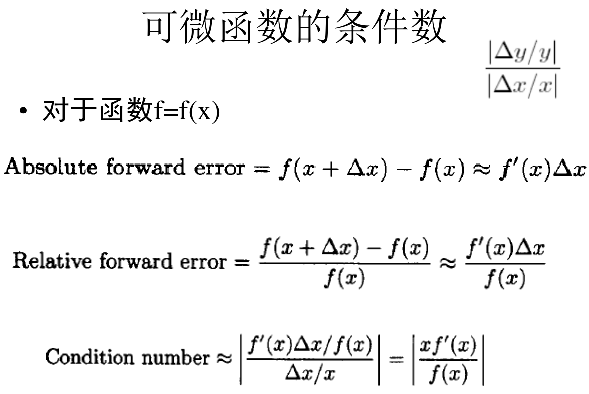
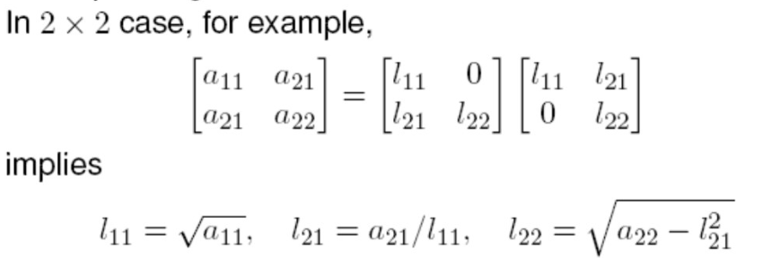

数值计算
专业词汇
interpolate 插值
polynomlal 多项式
monomial 单项式
iterative 迭代
equation 方程
equivation 等效
convergent 收敛
normal equations 正规方程组
orthogonal projector 垂直投影
科学计算
适定问题(well-posed problem)
需要满足如下三个条件：
a solution exists, （解存在）
the solution is unique, （解唯一）
the solution’s behaviour changes continuously with the initial conditions. （解能根据初始条件连续变化）
绝对误差、相对误差：
误差界：
向前误差、向后误差：
截断舍入、最近舍入：

误差分类：数据误差、计算误差（截断误差（假设没有舍入，方法产生的误差）、舍入误差）
敏感性&病态性：问题是敏感的&病态的：输入有误差，输出会有较大误差
量化：条件数，条件数大称为病态的
相对条件数的计算：

函数与其反函数的条件数互为倒数，一个大一个小
绝对条件数：|Δy|/|Δx|
浮点数的性质：
非规格化可以表示更多的数

线性方程组
特殊类型矩阵：
置换矩阵：
正交矩阵：如果AAT=E（E为单位矩阵，AT表示“矩阵A的转置矩阵”）或ATA=E，则n阶实矩阵A称为正交矩阵。
对于对称正定矩阵，有楚列斯基分解：

向量范数：
1-范数：绝对值之和
2-范数：欧几里得范数，欧氏距离
无穷范数：绝对值最大的元素绝对值
矩阵范数：
1-范数：每一列绝对值求和，取列和最大
2-范数：矩阵AtA的最大特征值开平方根
矩阵谱半径：矩阵最大特征值绝对值
无穷范数：每一行绝对值求和，取行和最大
方阵的条件数：
条件数与两个范数阶数相同
LU分解（高斯消去法）：
两种迭代法：
jaboci迭代法：
高斯-塞德尔迭代法：
松弛法：在G-S迭代法的结果上进行修正
线性最小二乘
线性最小二乘曲线拟合的基本思想：
正规方程组:
求最小二乘解:
豪斯-霍尔德变换：
吉文斯变换：

格拉-施密特变换（线性代数中所学的方法）：
奇异值分解：
列满秩最小二乘解的新公式：
最小二乘解的一般公式：
非线性方程
二分法迭代：
局部收敛条件：

收敛速度：
牛顿法迭代：
割线法：
插值
分段多项式插值函数：
样条&三次样条函数：
三种多项式插值方法：
单项式基函数：
拉格朗日插值：
拉格朗日基函数：
例题：
牛顿插值：
数值积分与数值微分
代数精度 定义：如果对于所有次数不超过m 的多项式f (x) ，求积公式都精确成立，但对次数为m +1 的多项式不精确成立，则称该求积公式具有m 次代数精度
三种牛顿-科斯特积分公式：
复化积分公式：